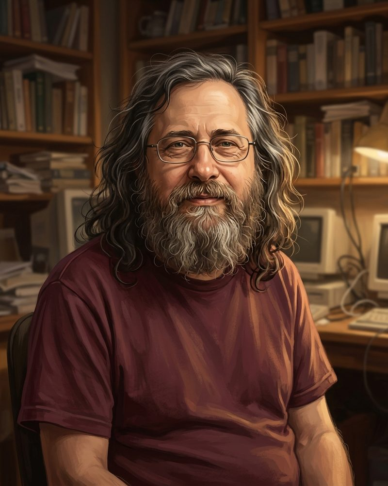
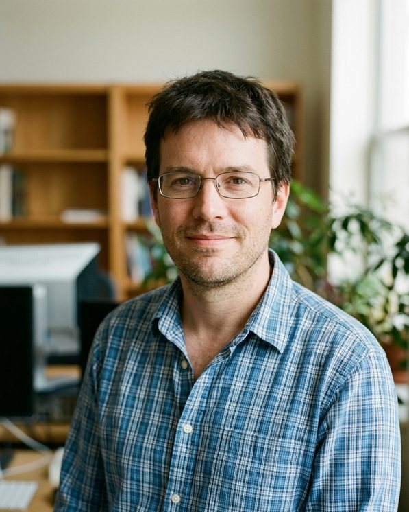
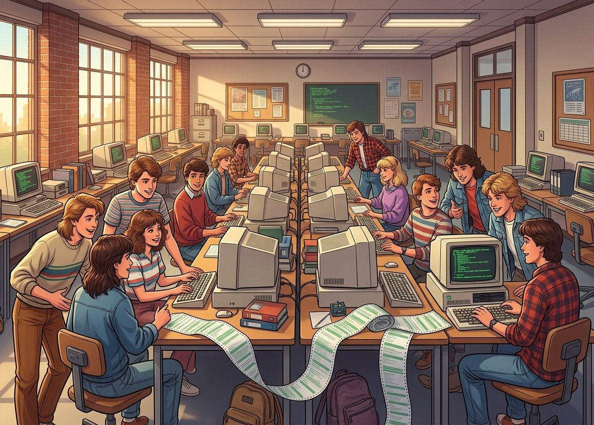
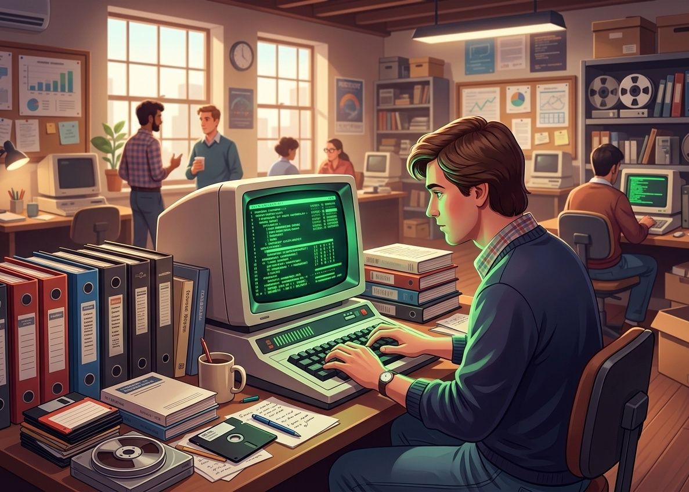
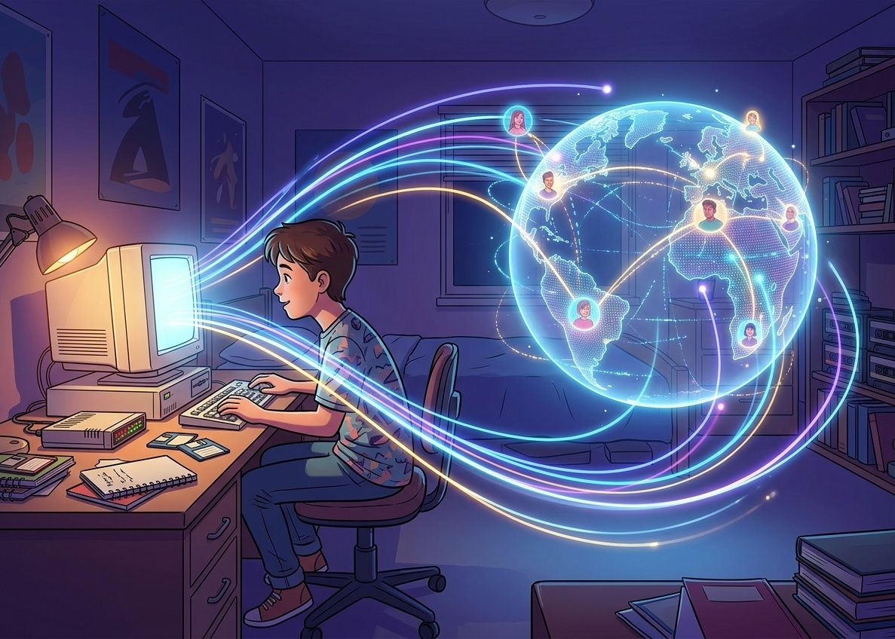
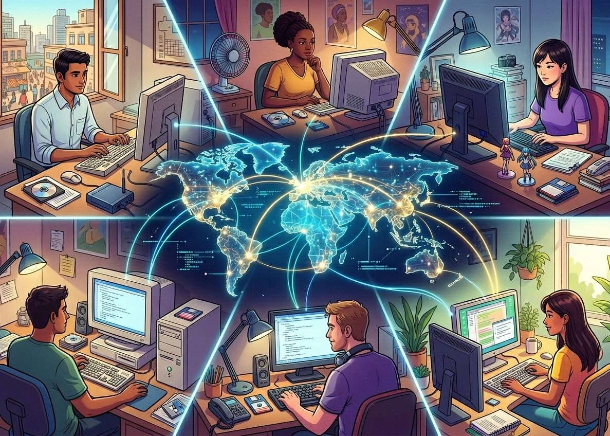
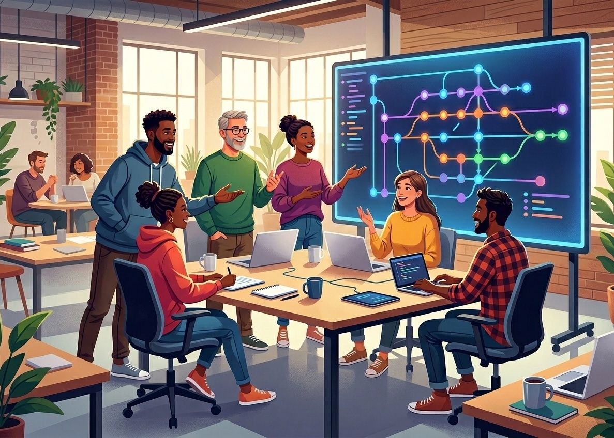

Cuatro décadas de código abierto.
Una línea de tiempo desde el Proyecto GNU hasta el ecosistema actual: las personas, las licencias y las plataformas que convirtieron una idea en la infraestructura del software mundial.
Línea del tiempo
Recorre la historia haciendo scroll: la línea se enciende a medida que avanzas.
Proyecto GNU
Richard Stallman inicia GNU con el objetivo de crear un sistema operativo completo compuesto enteramente por software libre.
Free Software Foundation
Stallman funda la FSF para dar soporte legal y organizativo al movimiento del software libre y publicar las licencias GPL.
Primera licencia GPL
Se publica la primera versión de la Licencia Pública General GNU. Introduce el copyleft: puedes modificar y compartir el software, pero tus versiones deben seguir siendo libres.
Ver licencias →Nace Linux
Linus Torvalds publica el kernel Linux. Combinado con las herramientas de GNU, da origen a un sistema operativo libre completo que hoy corre en servidores, teléfonos y supercomputadoras.
Debian
Ian Murdock anuncia Debian, una distribución construida de forma abierta por voluntarios. Hoy es la base de Ubuntu y de cientos de distribuciones derivadas.
Ver Debian →Se acuña "Open Source"
Tras el anuncio de Netscape de liberar su código, se funda la Open Source Initiative (OSI) para facilitar la adopción comercial del modelo.
Ver organizaciones →Ubuntu
Canonical lanza Ubuntu, una distribución basada en Debian pensada para que Linux sea fácil de instalar y usar en el escritorio.
Ver Ubuntu →Git
Torvalds crea Git, el sistema de control de versiones distribuido que cambiaría para siempre la forma de colaborar en proyectos de código.
Ver Git →GitHub
El lanzamiento de GitHub simplifica alojar, compartir y contribuir a proyectos, acelerando la colaboración masiva a escala global.
Android
Llega el primer teléfono con Android, basado en el kernel Linux y con gran parte de su código abierto. Hoy está en miles de millones de dispositivos.
Docker
Docker populariza los contenedores como una forma ligera de empaquetar y desplegar aplicaciones de manera reproducible.
Ver Docker →Kubernetes
Google publica Kubernetes, el orquestador de contenedores que poco después pasaría a la Cloud Native Computing Foundation, dentro de la Linux Foundation.
Ver Kubernetes →Microsoft compra GitHub
Microsoft adquiere GitHub en un giro simbólico: una empresa históricamente asociada al software propietario pasa a ser uno de los mayores contribuyentes del open source.
Ver ficha →Un ecosistema consolidado
Linux, Python, Kubernetes, VS Code, Android y miles de proyectos más sostienen la industria del software mundial — todos abiertos, todos accesibles.
Quién los sostiene →Personas que marcaron la historia
Detrás de cada hito hay personas que decidieron compartir su trabajo. Elige una para conocer su historia.
personas/stallman.jpg
Richard Stallman
Programador nacido en Nueva York en 1953. Trabajó en el laboratorio de Inteligencia Artificial del MIT, donde compartir el código era lo normal entre quienes programaban. Cuando vio que el software se volvía cada vez más cerrado, decidió actuar.
En 1983 anunció el Proyecto GNU para construir un sistema operativo completamente libre y en 1985 fundó la Free Software Foundation. Es autor de GNU Emacs y del compilador GCC, y redactó la Licencia Pública General (GPL), la base legal del copyleft.
- País
- Estados Unidos (Nueva York)
- Conocido por
- Proyecto GNU, FSF, licencia GPL, GCC y Emacs
- Distinción
- Beca MacArthur (1990)
personas/torvalds.jpgLinus Torvalds
Nació en Helsinki en 1969. En 1991, siendo estudiante de la Universidad de Helsinki, publicó la primera versión de un kernel que había escrito por afición para su computadora personal. Al combinarlo con las herramientas de GNU nació el sistema operativo que hoy conocemos como Linux.
En 2005 creó Git para coordinar el desarrollo del propio kernel, cuando necesitaba una herramienta rápida, distribuida y libre. Más de tres décadas después sigue coordinando el desarrollo del kernel, con miles de personas contribuyendo.
- País
- Finlandia (vive en Estados Unidos)
- Conocido por
- Kernel Linux y Git
- Distinción
- Premio Millennium Technology (2012)
personas/murdock.jpg
Ian Murdock
Nació en 1973 y estudiaba en la Universidad de Purdue cuando, en agosto de 1993, anunció Debian: una distribución desarrollada de forma abierta por una comunidad, en lugar de por una sola empresa.
Debian se convirtió en una de las bases más importantes del ecosistema: de ella derivan Ubuntu y cientos de distribuciones más. Más adelante Murdock fue director de tecnología del Free Standards Group y de la Linux Foundation, y luego trabajó en Sun Microsystems. Falleció en 2015.
- País
- Alemania Occidental, criado en Estados Unidos
- Conocido por
- Debian GNU/Linux
- Cargo
- CTO del Free Standards Group y la Linux Foundation (2006–2007)
personas/raymond.jpgEric S. Raymond
Programador y escritor estadounidense nacido en 1957. Su ensayo "La catedral y el bazar" (1997) comparó el desarrollo cerrado, tipo catedral, con el desarrollo abierto y caótico de Linux, tipo bazar, y defendió que muchos ojos revisando el código producen mejor software.
Ese texto influyó en la decisión de Netscape de liberar su código en 1998. Poco después Raymond ayudó a fundar la Open Source Initiative y a promover el término "Open Source" como una forma más amigable para las empresas de hablar de software libre.
- País
- Estados Unidos
- Conocido por
- "La catedral y el bazar" y el término Open Source
- Cargo
- Cofundador de la Open Source Initiative
personas/perens.jpgBruce Perens
Programador estadounidense que lideró el Proyecto Debian entre 1996 y 1997, tras Ian Murdock. En esa etapa escribió las Debian Free Software Guidelines, un conjunto de criterios para decidir qué software puede considerarse libre.
Ese documento sirvió de base para la Definición de Open Source, que la Open Source Initiative adoptó en 1998 cuando él y Eric Raymond la fundaron. También es conocido por BusyBox, un conjunto de herramientas muy usado en sistemas Linux embebidos.
- País
- Estados Unidos
- Conocido por
- Definición de Open Source y Debian Free Software Guidelines
- Cargo
- Líder del Proyecto Debian (1996–1997)
La historia en imágenes
Cinco escenas que resumen cómo ha cambiado la forma de compartir software, de los laboratorios de los 80 a la colaboración global de hoy.
historia-1.jpg
historia-2.jpg
historia-3.jpg
historia-4.jpg
historia-5.jpg
Ilustraciones generadas con IA (Gemini); no son fotografías reales. Haz clic en una imagen para verla en grande.